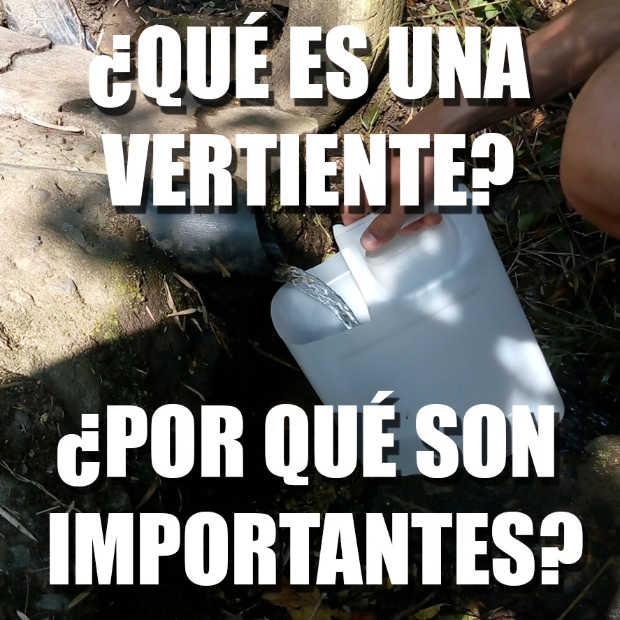
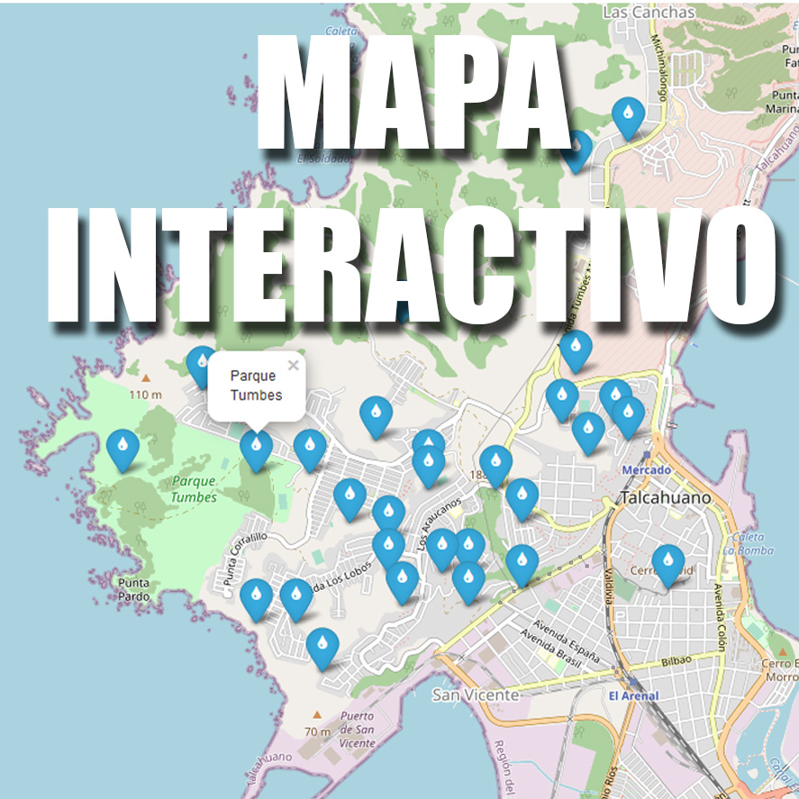
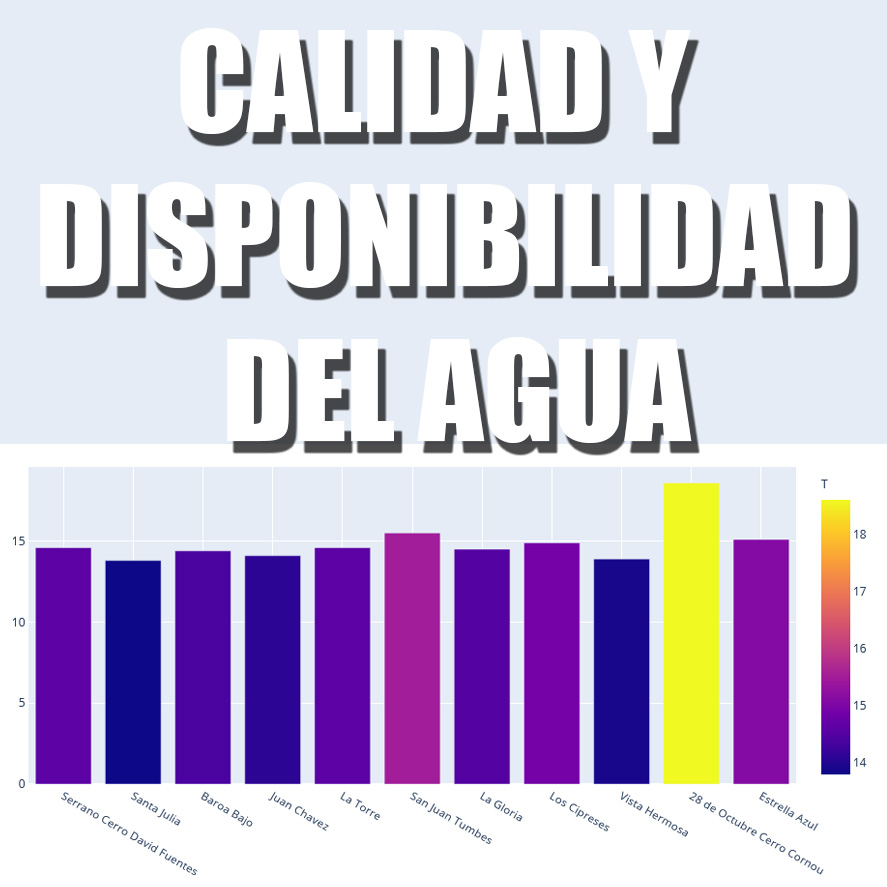
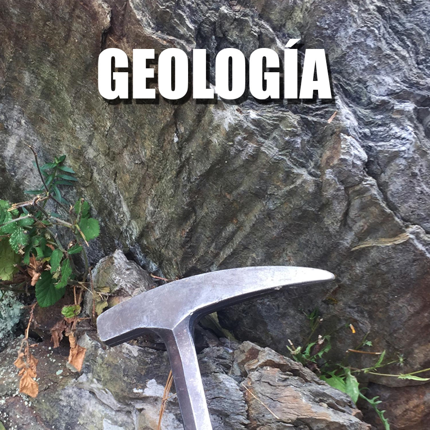

En la península de Tumbes, existen numerosas vertientes las cuales han tenido un rol histórico desde los primeros asentamientos en la zona. Luego del terremoto del 2010, su importancia vuelve a ser reconocida frente a la falta de agua potable, ya que estas representaron una de las principales fuentes de agua dulce.
El adecuado conocimiento y protección de nuestras vertientes es vital para nuestra comunidad ¡Cuidemos nuestros recursos!



